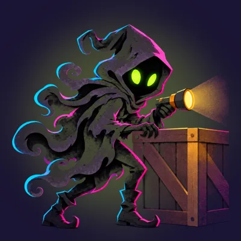
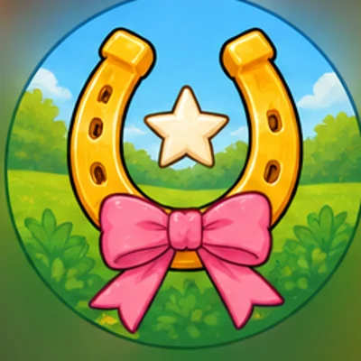

Detectivefeestje voor kinderen
Op een detectivefeestje zijn de kinderen zelf de speurders. Ze volgen sporen in de buurt, horen getuigen (van wie er één liegt), verzamelen bewijs en wijzen aan het eind de dader aan.
MiniMystery heeft drie detectivezaken: een politiezaak met vingerafdrukken en een confrontatie, een dief die alle lichtjes uit de straat stal, en een verdwenen pony met dieren als getuigen. Aan het eind krijgt de groep een diploma met hun eigen foto's.
Welke zaak past?
Agent voor Eén Dag
Alle straatnaamborden in de buurt zijn gestolen. Word agent en pak de dief.

De Lichtjesdief
Hij stal alle lichtjes van de straat. Vang hem op acht plekken en zie wie hij is.

Het Geheim van Pony Pluis
Pony Pluis is weg uit haar stal. Volg de hoefafdrukken en vraag het aan de dieren.
Backstage: De Verdwenen Setlist
Een uur voor de show is de setlist weg. Vind hem terug en geef dan zelf de show.
Voorbeeldopdrachten
- Een vingerafdruk afnemen (Agent voor Eén Dag)
- Een compositietekening van de dief maken (Agent voor Eén Dag)
- Een voetspoor vergelijken (Agent voor Eén Dag)
- De Lichtjesdief vangen terwijl hij over het scherm flitst (De Lichtjesdief)
- Met de zaklamp zijn schaduw vasthouden (De Lichtjesdief)
- Raden wiens schaduw er op de muur staat (De Lichtjesdief)
- Hoefafdrukken zoeken in het zand (Het Geheim van Pony Pluis)
- Pluis roskammen (Het Geheim van Pony Pluis)
- Appels tellen bij de appelkraam (Het Geheim van Pony Pluis)
- Een dansje van de band nadoen (Backstage: De Verdwenen Setlist)
- Merch stylen (Backstage: De Verdwenen Setlist)
- De lichtshow nabouwen (Backstage: De Verdwenen Setlist)
Wat heb je nodig?
- Een smartphone met internet (iPhone of Android), opgeladen en met het geluid aan
- Buiten met kaart: GPS aan. Werkt de kaart niet, dan speel je dezelfde zaak zonder kaart verder
- Een volwassene die meeloopt en de telefoon vasthoudt of doorgeeft
- Geen app en geen account: je opent de zaak gewoon in de browser
- Optioneel: een printer voor het diploma, en een echte traktatie om te verstoppen (de laatste aanwijzing stuurt de kinderen erheen)
Zo werkt het
- Kies een zaak en probeer de proefrondeGratis, een paar minuten, op de bank. Dan weet iedereen hoe het werkt.
- Koop de Feestpas en vul de code in€ 9,99 per zaak, direct na betaling. Twee maanden lang zo vaak spelen als je wilt.
- Spelen!Buiten met kaart in je eigen buurt, buiten zonder kaart, of binnen. Aan het eind een diploma en een album met jullie foto's.
Veelgestelde vragen
Is het niet te eng?
Nee. Er vloeit geen bloed en niemand gaat dood: er is iets gestolen of iemand is zoek. Het blijft spannend, maar kindvriendelijk.
Kunnen kinderen die nog niet lezen meedoen?
Ja. De telefoon leest alles voor, en bij Agent voor Eén Dag en Pony Pluis zijn de puzzels met plaatjes.
Hoe sluit het af?
Met een ontmaskering of confrontatie, een diploma om te printen en een album met de foto's van de groep.
Wat kost het?
Een zaak kost € 9,99. Daarmee speel je die zaak twee maanden lang zo vaak je wilt. De proefronde is gratis.
Hoeveel kinderen kunnen meedoen?
Tot ongeveer 8 kinderen per telefoon. Meer kinderen? Maak groepjes met elk een telefoon en dezelfde zaakcode; aan het eind is er een teamstand.
Speurtocht op maat
Een speurtocht met de namen van de kinderen erin, rond jullie school of straat, voor een schoolkamp, buurtfeest of bedrijfsuitje? Mail wat je in gedachten hebt, dan hoor je snel wat er kan. Prijs in overleg.
✉️ Mail je idee